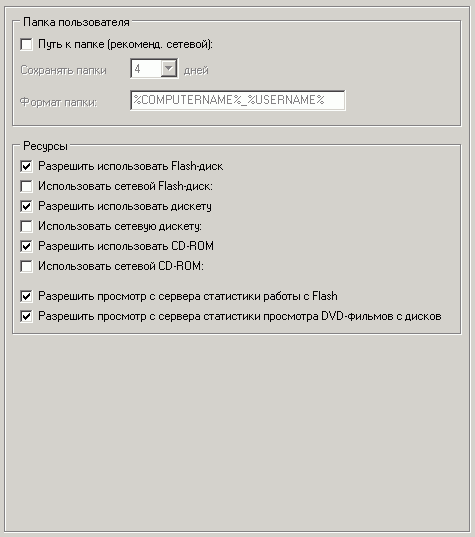

Наиболее важные опции на этой вкладке:
Папка пользователя
Папка пользователя представляет собой ресурс, с которым будет работать пользователь через безопасный проводник шелла, другие встроенные утилиты шелла, а также диалоговые окна открытия/сохранения файлов других программ. Этот ресурс является одним из самых важных в шелле!
Папку пользователя рекомендуется установить сетевой на файловом сервере. Для каждого компьютера папка пользователя может быть своя (путем добавления префикса с описанием машины, именем пользователя Windows и пр.).
Формат может содержать переменные:
%COMPUTERNAME% - имя компьютера
%USERNAME% - имя пользователя Windows
%RS_MACHINE% - описание машины
%RS_LOC% - местоположение машины
Также папка пользователя устанавливается отдельной для каждого нового дня, и очищается в соответствии с выбранной опцией очистки.
При указании 0 дней очистки папка пользователя вообще не будет очищаться.
Например, если введена папка пользователя \\server\users и формат задан %COMPUTERNAME%_%USERNAME%, то для машины "C32/user" в день 20.10.2008 будет создана папка
\\server\users\C32_user\2008_10_20\ и именно с этой папкой будет работать пользователь.
Папку пользователя рекомендуется установить ОБЯЗАТЕЛЬНО, иначе многие настройки безопасности просто потеряют свою силу.
Из папки пользователя пользователь легко перенесет свои файлы в любой разрешенный ресурс в проводнике пользователя: дискета, flash и пр.
Разрешить использовать ресурс дискеты, flash, CD-ROM
Разрешает или запрещает использовать указанный ресурс в проводнике пользователя или диалоговых окнах Open/Save.
Также возможно использование сетевых аналогов.